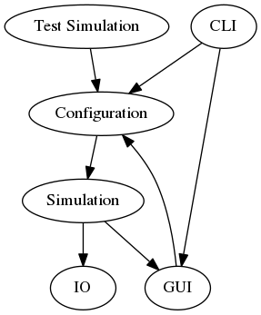

Note
This section is unfinished
Usage¶
Todo
Video tutorial and demonstration
Architecture¶
Two main processes are
- Simulation
- Graphical User Interface (GUI)
Simulation generates data which can be stored in file by the I/O module and sent to the GUI to be displayed interactively. Simulation can be run either by
- Starting GUI and selecting simulation and running it
- Running the software from command line
Crowddynamics aims to be modular and extensible so that new models can be easily integrated and tested.
Crowddynamics uses plugin software architecture.
Command-line Interface¶
Usage: crowddynamics [OPTIONS] COMMAND [ARGS]...
Main commands.
Options:
--help Show this message and exit.
Commands:
gui Run graphical user interface.
run Run simulation from the command-line.